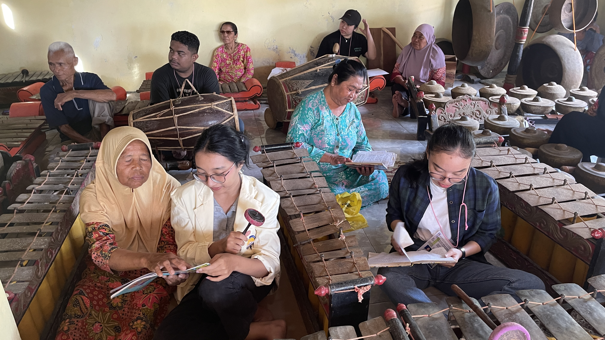
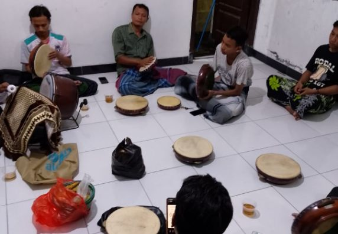

Padukuhan Klumpit memiliki seni budaya gamelan yang bernama Karawitan. Kegiatan Karawitan ini biasanya dilaksanakan di Padukuhan Pudak bersamaan dengan anggota Karawitan dari Tri-Dusun.

Seni budaya Terbangan, memainkan alat musik rebana oleh laki-laki dan perempuan. Dilakukan dari malam sampai subuh.